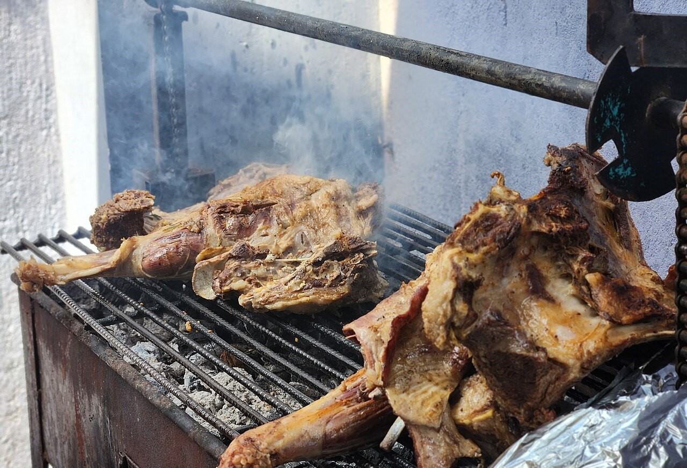

Nyama Choma

A popular Kenyan dish of grilled meat, smoky and flavorful, often served with ugali or vegetable.
Succulent meat slow-grilled over charcoal, infusing a rich smoky flavor that defines Kenyan gatherings.
Best enjoyed with ugali and fresh kachumbari for a truly authentic experience.
A mix of meat, spices, and oil to create a flavorful marinade, with optional vegetables for serving
ingredients:
- 1 kg beef, goat, or chicken pieces
- 2 tablespoons vegetable oil
- 1 teaspoon salt
- 1 teaspoon black pepper
- 1 teaspoon paprika or chili powder
- 2 cloves garlic, minced
- juice of 1 lemon
- Optional: onions and tomatoes for serving
how to cook nyama choma;
- clean the meat and cut inot piece if necessary.
- Mix the oil, salt, pepper, paprika, garlic, and lemon juice to make a marinade.
- Coat the meat thoroughly in the marinade and let it sit for at least 30 minutes.
- Preheat the grill or barbecue to medium-high heat.
- Grill the meat, turning occasionally, until cooked through and slightly charred on the edges.
- Serve hot, optionally with sliced onions, tomatoes, and ugali on the side.
Back to Home